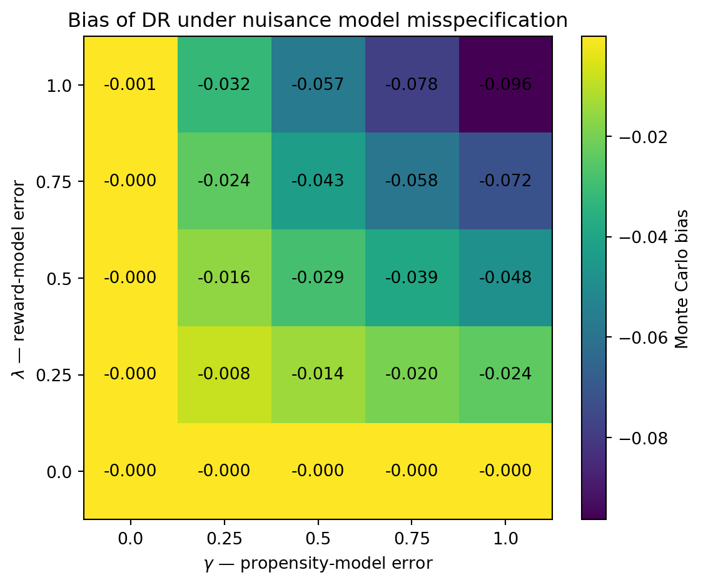

| epsilon | estimator | mean | bias | variance | mse |
|---|---|---|---|---|---|
| 0.3 | DM | 0.660016 | 1.6e-05 | 2e-06 | 2e-06 |
| 0.3 | IPS | 0.657402 | -0.002598 | 0.006 | 0.006007 |
| 0.3 | SNIPS | 0.657291 | -0.002709 | 0.002164 | 0.002171 |
| 0.3 | DR | 0.658377 | -0.001623 | 0.001967 | 0.001969 |
| 0.1 | DM | 0.660003 | 3e-06 | 2e-06 | 2e-06 |
| 0.1 | IPS | 0.662038 | 0.002038 | 0.022055 | 0.022059 |
| 0.1 | SNIPS | 0.657443 | -0.002557 | 0.006545 | 0.006551 |
| 0.1 | DR | 0.659737 | -0.000263 | 0.006029 | 0.006029 |
| 0.05 | DM | 0.66 | -0 | 2e-06 | 2e-06 |
| 0.05 | IPS | 0.659912 | -8.8e-05 | 0.046347 | 0.046347 |
| 0.05 | SNIPS | 0.651849 | -0.008151 | 0.013245 | 0.013312 |
| 0.05 | DR | 0.657595 | -0.002405 | 0.01217 | 0.012175 |
| 0.02 | DM | 0.660006 | 6e-06 | 2e-06 | 2e-06 |
| 0.02 | IPS | 0.652283 | -0.007717 | 0.113588 | 0.113648 |
| 0.02 | SNIPS | 0.63911 | -0.02089 | 0.033821 | 0.034257 |
| 0.02 | DR | 0.65905 | -0.00095 | 0.027993 | 0.027994 |
| 0.01 | DM | 0.660004 | 4e-06 | 2e-06 | 2e-06 |
| 0.01 | IPS | 0.65247 | -0.00753 | 0.235888 | 0.235945 |
| 0.01 | SNIPS | 0.605422 | -0.054578 | 0.066441 | 0.06942 |
| 0.01 | DR | 0.662307 | 0.002307 | 0.053939 | 0.053944 |
An Empirical Anatomy of Off-Policy Evaluation (OPE) Estimators
1 Introduction
1.1 Motivation
In many decision-making problems, a policy selects an action based on the information available about each individual or situation. In a contextual bandit, this information is represented by a context \(X\), from which an action \(A\) is selected and a reward \(R\) is subsequently observed.
A common task is to evaluate a new policy before deploying it. The most direct approach would be to run the policy and observe the rewards it obtains, but this can be costly, slow, or risky. Off-Policy Evaluation (OPE) seeks to estimate the value of a target policy using data previously collected by another policy (Li et al. 2011; Dudík et al. 2011).
This problem arises, for example, in recommender systems, online advertising, or adaptive experimentation, where large amounts of logged interaction data may be available but deploying every new policy solely to measure its performance is undesirable.
1.2 Problem setup
Let \(\mathcal{X}\) be the context space and let \(\mathcal{A}\) be a finite action space. A stochastic policy is a mapping
\[ \pi : \mathcal{X} \to \Delta(\mathcal{A}), \]
where \(\Delta(\mathcal{A})\) denotes the set of probability distributions over \(\mathcal{A}\). For each context \(x\), the quantity \(\pi(a \mid x)\) therefore represents the probability of selecting action \(a\) under policy \(\pi\).
We distinguish two policies. The logging policy
\[ b : \mathcal{X} \to \Delta(\mathcal{A}) \]
is the policy that generates the actions observed in the data, whereas the target policy
\[ \pi : \mathcal{X} \to \Delta(\mathcal{A}) \]
is the policy whose value we want to evaluate.
The data-generating process for one observation can be written as
\[ X \sim P_X, \qquad A\mid X=x \sim b(\cdot|x), \qquad R\mid X=x,A=a \sim P_R(\cdot|x,a). \]
Define the conditional mean reward function
\[ \mu(x,a) = \mathbb{E}[R\mid X=x,A=a]. \]
The value of a policy \(\pi\) is the expected reward that would be obtained if, while keeping the same distribution of contexts and rewards conditional on context and action, actions were selected according to \(\pi\):
\[ V^{\pi} = \mathbb{E}_{X\sim P_X} \left[ \sum_{a\in\mathcal A} \pi(a \mid X)\mu(X,a) \right]. \]
We only observe a set of logged data
\[ D=\{(X_i,A_i,R_i)\}_{i=1}^n \]
generated under the logging policy \(b\), and the goal of OPE is to estimate \(V^{\pi}\) without deploying \(\pi\).
The fundamental difficulty is that only the reward associated with the selected action is observed. For an observation \((X_i,A_i,R_i)\), we do not know what reward would have been obtained under actions \(a\neq A_i\). This bandit feedback structure prevents us from directly computing the value of an alternative policy from the observed data.
1.3 Challenges
The feasibility and precision of offline evaluation depend on several distinct mechanisms.
First, some estimators depend on the conditional mean reward function \(\mu(x,a)\) and others on the propensities of the logging policy \(b(a \mid x)\). In practice, these quantities may be unknown and replaced by estimates \(\hat{\mu}\) and \(\hat{b}\). Misspecification of these nuisance models can then introduce bias or remove consistency guarantees.
Second, estimators based on importance weighting use ratios of the form
\[ w(x,a) = \frac{\pi(a \mid x)}{b(a \mid x)}. \]
Even when these ratios are well defined, they can be very large or highly dispersed if the target policy assigns high probability to actions that are rare under the logging policy. This makes the overlap between the two policies an important determinant of variance.
Finally, for a policy to be evaluable from data generated by \(b\), the positivity condition is fundamental:
\[ \pi(a \mid x)>0 \quad\Longrightarrow\quad b(a \mid x)>0 \]
for every relevant \((x,a)\). If this condition fails, the target policy assigns positive probability to actions that never occur under the logging policy in certain contexts. In this regime, the problem may cease to be merely one of high variance and become an identification problem.
1.4 Objective and approach
The goal of this work is to study when and why four fundamental OPE estimators fail in contextual bandits: Direct Method (DM), Inverse Propensity Scoring (IPS), Self-Normalized IPS (SNIPS), and Doubly Robust (DR).
In particular, we study how their bias, variance, and mean squared error respond to four mechanisms: nuisance-model misspecification, weak overlap, policy shift, and positivity violations. The central question is:
When and why do DM, IPS, SNIPS, and DR fail when evaluating contextual-bandit policies offline, as a function of nuisance-model specification, policy overlap, policy shift, and lack of positivity?
To answer this question, we construct a deliberately small synthetic laboratory in which \(P_X\), \(\mu\), \(b\), and \(\pi\) are known exactly. This makes it possible to know \(V^{\pi}\) exactly and to vary the mechanisms of interest in a controlled way, comparing theoretical predictions with Monte Carlo results.
2 Estimators
The four estimators studied here represent different strategies for reconstructing the counterfactual value of the target policy from bandit feedback. DM replaces unobserved rewards with predictions from a reward model; IPS avoids modeling rewards and reweights observations using propensities; SNIPS normalizes those same weights to stabilize estimation; and DR combines a reward-model baseline with an importance-weighted residual correction. This decomposition will be useful later, because the different failure mechanisms affect these components in different ways.
2.1 DM (Direct Method)
The idea behind DM is to first estimate the reward that each action would produce in each context using \(\hat{\mu}(x,a)\), and then average those predictions according to the target-policy probabilities.
The individual contribution of each observation to the DM estimator of the target-policy value \(\pi\) is: \[ \psi_i^{DM} = \sum_a {\pi (a \mid X_i) \cdot \hat{\mu} (X_i,a)} \]
where \(\hat{\mu}(X_i,a)\) is an estimator of the conditional mean reward function
\[ \mu (X_i,a) = \mathbb{E}[R \mid X_i,A_i=a] \]
Thus, the DM estimator of the target-policy value \(\pi\) is:
\[ \hat{V}_{DM}^{\pi} \, = \frac{1}{n} \sum_{i=1}^{n} \psi_i^{DM} = \frac{1}{n} \sum_{i=1}^{n} \sum_a {\pi (a \mid X_i) \cdot \hat{\mu} (X_i,a)} \]
Assumption \(\quad\) \(\hat{\mu}(X_i,a)\) is defined on the support of the target policy \(\pi\)
The bias of the DM estimator of the target-policy value \(\pi\) is:
\[\begin{align*} \operatorname{Bias}_{DM} &= \mathbb{E}\left[\hat{V}_{DM}^{\pi}\right] - V^{\pi} \\ &= \mathbb{E}\left[\frac{1}{n} \sum_{i=1}^{n} \sum_a {\pi (a \mid X_i) \cdot \hat{\mu} (X_i,a)}\right] - \mathbb{E}_X\left[\sum_a \pi(a \mid X) \cdot \mu(X,a)\right] \\ &= \frac{1}{n} \sum_{i=1}^{n} \mathbb{E}\left[\sum_a {\pi (a \mid X_i) \cdot \hat{\mu} (X_i,a)}\right] - \mathbb{E}_X\left[\sum_a \pi(a \mid X) \cdot \mu(X,a)\right] \\ &= \mathbb{E}_X\left[\sum_a {\pi (a \mid X) \cdot \hat{\mu} (X,a)}\right] - \mathbb{E}_X\left[\sum_a \pi(a \mid X) \cdot \mu(X,a)\right] \\ &= \mathbb{E}_X\left[\sum_a {\pi (a \mid X) \cdot (\hat{\mu} (X,a) - \mu (X,a))}\right] \end{align*}\]
Thus, the bias of the DM estimator of the target-policy value \(\pi\) is zero if \[ \hat{\mu} (X,a) = \mu (X,a) \] for every \(a\) in the support of the target policy \(\pi\).
2.2 IPS (Inverse Propensity Scoring)
IPS takes the opposite approach: instead of modeling counterfactual rewards, it uses the rewards actually observed and corrects the difference between logging and target policies through importance weights. An observation receives more weight when its action is more likely under \(\pi\) relative to \(b\).
The IPS estimator is an application of the Horvitz–Thompson reweighting principle to off-policy evaluation (Horvitz and Thompson 1952; Wang et al. 2017).
The individual contribution of each observation to the IPS estimator of the target-policy value \(\pi\) is: \[ \psi_i^{IPS} = \frac{\pi(A_i \mid X_i)}{b(A_i \mid X_i)} \cdot R_i \]
and the IPS estimator of the target-policy value \(\pi\) is: \[ \hat{V}_{IPS}^{\pi} \, = \frac{1}{n} \sum_{i=1}^{n} \psi_i^{IPS} \]
Assumption \(\quad\) Positivity: \(\pi(a \mid x) > 0 \implies b(a \mid x) > 0\)
The bias of the IPS estimator of the target-policy value \(\pi\) is:
\[\begin{align*} \operatorname{Bias}_{IPS} &= \mathbb{E}\left[\hat{V}_{IPS}^{\pi}\right] - V^{\pi} \\ &= \mathbb{E}_X\left[\mathbb{E}\left[\hat{V}_{IPS}^{\pi}|X\right]\right] - \mathbb{E}_X\left[\sum_a \pi(a \mid X) \cdot \mu(X,a)\right] \\ &= \mathbb{E}_X\left[\mathbb{E}\left[\frac{1}{n} \sum_{i=1}^{n} \frac{\pi(A_i \mid X)}{b(A_i \mid X)} \cdot R_i \mid X\right]\right] - \mathbb{E}_X\left[\sum_a \pi(a \mid X) \cdot \mu(X,a)\right] \\ &= \mathbb{E}_X\left[\frac{1}{n} \sum_{i=1}^{n} \mathbb{E}\left[\frac{\pi(A_i \mid X)}{b(A_i \mid X)} \cdot R_i \mid X\right]\right] - \mathbb{E}_X\left[\sum_a \pi(a \mid X) \cdot \mu(X,a)\right] \\ &= \mathbb{E}_X\left[\mathbb{E}\left[\frac{\pi(A \mid X)}{b(A \mid X)} \cdot R \mid X\right]\right] - \mathbb{E}_X\left[\sum_a \pi(a \mid X) \cdot \mu(X,a)\right] \\ &= \mathbb{E}_X\left[\sum_a P(A=a \mid X) \cdot \mathbb{E}\left[\frac{\pi(A \mid X)}{b(A \mid X)} \cdot R \mid X, A=a\right]\right] - \mathbb{E}_X\left[\sum_a \pi(a \mid X) \cdot \mu(X,a)\right] \\ &= \mathbb{E}_X\left[\sum_a b(a \mid X) \cdot \frac{\pi(a \mid X)}{b(a \mid X)} \cdot \mathbb{E}[R \mid X, A=a]\right] - \mathbb{E}_X\left[\sum_a \pi(a \mid X) \cdot \mu(X,a)\right] \\ &= \mathbb{E}_X\left[\sum_a \pi(a \mid X) \cdot \mu(X,a)\right] - \mathbb{E}_X\left[\sum_a \pi(a \mid X) \cdot \mu(X,a)\right] \\ &= 0 \end{align*}\]
If \(b\) is unknown and replaced by an estimate \(\hat{b}\), the bias of the IPS estimator of the target-policy value \(\pi\) is:
\[\begin{align*} \operatorname{Bias}_{IPS} = ... &= \mathbb{E}_X\left[\sum_a b(a \mid X) \cdot \frac{\pi(a \mid X)}{\hat{b}(a \mid X)} \cdot \mathbb{E}[R \mid X, A=a]\right] - \mathbb{E}_X\left[\sum_a \pi(a \mid X) \cdot \mu(X,a)\right] \\ &= \mathbb{E}_X\left[\sum_a \pi(a \mid X) \cdot \frac{b(a \mid X)}{\hat{b}(a \mid X)} \cdot \mu(X,a)\right] - \mathbb{E}_X\left[\sum_a \pi(a \mid X) \cdot \mu(X,a)\right] \\ &= \mathbb{E}_X\left[\sum_a \pi(a \mid X) \cdot \left(\frac{b(a \mid X)}{\hat{b}(a \mid X)} -1\right) \cdot \mu(X,a)\right] \\ \end{align*}\]
therefore, the bias of the IPS estimator of the target-policy value \(\pi\) is zero if \[ \frac{b(a \mid X)}{\hat{b}(a \mid X)} = 1 \iff \hat{b}(a \mid X) = b(a \mid X) \]
for every \(a\) in the support of the target policy \(\pi\).
To derive its variance, define
\[ Z_i = \frac{\pi(A_i \mid X_i)}{b(A_i \mid X_i)} \cdot R_i \]
Then
\[ \hat{V}_{IPS}^{\pi} = \frac{1}{n} \sum_{i=1}^{n} Z_i \]
Since the observations are i.i.d.,
\[ \operatorname{Var}(\hat{V}_{IPS}^{\pi}) = \operatorname{Var}\left(\frac{1}{n} \sum_{i=1}^{n} Z_i\right) = \frac{1}{n^2} \sum_{i=1}^{n} \operatorname{Var}(Z_i) = \frac{1}{n} \operatorname{Var}(Z) \]
Now,
\[ \operatorname{Var}(Z) = \mathbb{E}[Z^2] - \mathbb{E}[Z]^2 \]
Under the true logging policy and the positivity assumption,
\[ \mathbb{E} [Z] = \mathbb{E}\left[\frac{\pi(A \mid X)}{b(A \mid X)} \cdot R\right] = V^{\pi} \]
Therefore, it remains only to compute \(\mathbb{E}[Z^2]\). We first condition on \(X\):
\[\begin{align*} \mathbb{E} [Z^2] &= \mathbb{E}_X\left[\mathbb{E}[Z^2 \mid X]\right] \\ &= \mathbb{E}_X\left[\sum_a P(A=a \mid X) \cdot \mathbb{E}[Z^2 \mid X, A=a]\right] \\ &= \mathbb{E}_X\left[\sum_a b(a \mid X) \cdot \mathbb{E}\left[\left(\frac{\pi(A \mid X)}{b(A \mid X)} \cdot R\right)^2 \mid X, A=a\right]\right] \\ &= \mathbb{E}_X\left[\sum_a b(a \mid X) \cdot \frac{\pi(a \mid X)^2}{b(a \mid X)^2} \cdot \mathbb{E}[R^2 \mid X, A=a]\right] \\ &= \mathbb{E}_X\left[\sum_a \frac{\pi(a \mid X)^2}{b(a \mid X)} \cdot \mathbb{E}[R^2 \mid X, A=a]\right] \end{align*}\]
Therefore,
\[ \operatorname{Var}(\hat{V}_{IPS}^{\pi}) = \frac{1}{n}\left( \mathbb{E}_X\left[\sum_a \frac{\pi(a \mid X)^2}{b(a \mid X)} \cdot \mathbb{E}[R^2 \mid X, A=a]\right] - (V^{\pi})^2 \right) \]
If \(R \mid X=x, A=a \sim Bernoulli(\mu(x,a))\) (as in our DGP), then \(R^2=R\), and therefore
\[ \mathbb{E} [R^2 \mid X=x, A=a] = \mathbb{E}[R \mid X=x, A=a] = \mu(x,a) \]
Hence:
\[ \operatorname{Var}(\hat{V}_{IPS}^{\pi}) = \frac{1}{n}\left( \mathbb{E}_X\left[\sum_a \frac{\pi(a \mid X)^2}{b(a \mid X)} \cdot \mu(X,a)\right] - (V^{\pi})^2 \right) \]
2.3 SNIPS (Self-Normalized IPS)
SNIPS starts from the same importance weights as IPS, but normalizes them by their sample mean. This normalization aims to limit fluctuations in the total mass of the weights and can stabilize variance, at the cost of turning the estimator into a ratio and losing exact finite-sample unbiasedness.
The individual contribution of each observation to the SNIPS estimator of the target-policy value \(\pi\) is: \[ \psi_i^{SNIPS} = \frac{W_i \cdot R_i}{\frac{1}{n}\sum_{i=1}^{n} W_i} \quad , \quad W_i \,= \; \frac{\pi(A_i \mid X_i)}{b(A_i \mid X_i)} \]
In this case, the normalization factor \(\frac{1}{n}\) cancels between numerator and denominator, so the SNIPS estimator of the target-policy value \(\pi\) is:
\[ \hat{V}_{SNIPS}^{\pi} \, = \frac{1}{n} \sum_{i=1}^{n} \psi_i^{SNIPS} = \frac{\sum_{i=1}^{n} W_i R_i}{\sum_{i=1}^{n} W_i} \]
(Swaminathan and Joachims 2015).
Assumption \(\quad\) Positivity: \(\pi(a \mid x) > 0 \implies b(a \mid x) > 0\)
In that case,
\[\begin{align*} \mathbb{E}\left[\frac{\pi(A \mid X)}{b(A \mid X)} | X\right] &= \sum_a P(A=a \mid X) \cdot \frac{\pi(a \mid X)}{b(a \mid X)} \\ &= \sum_a b(a \mid X) \cdot \frac{\pi(a \mid X)}{b(a \mid X)} \\ &= \sum_a \pi(a \mid X) \\ &= 1 \end{align*}\]
Therefore,
\[ \mathbb{E}\left[\frac{\pi(A \mid X)}{b(A \mid X)}\right] = \mathbb{E}_X\left[\mathbb{E}\left[\frac{\pi(A \mid X)}{b(A \mid X)} | X\right]\right] = \mathbb{E}_X[1] = 1 \]
However, both the numerator and denominator of the SNIPS estimator are correlated random variables, so in general
\[ \mathbb{E}\left[\frac{\sum_i W_i R_i}{\sum_i W_i}\right] \neq \frac{\mathbb{E}[\sum_i W_i R_i]}{\mathbb{E}[\sum_i W_i]} \]
Moreover, since
\[\begin{align*} \mathbb{E}\left[\sum_i W_i R_i\right] &= n \cdot \mathbb{E}\left[\frac{\pi(A \mid X)}{b(A \mid X)} \cdot R\right] \\ &= n \cdot \mathbb{E}\left[\psi^{IPS}\right] \\ &= n \cdot \mathbb{E}\left[\frac{1}{n} \sum_{i=1}^{n} \psi_i^{IPS}\right] \\ &= n \cdot \mathbb{E}\left[\hat{V}_{IPS}^{\pi}\right] \\ &= n \cdot V^{\pi} \end{align*}\]
and \(\mathbb{E}[\sum_i W_i] = n \cdot \mathbb{E}[\frac{\pi(A \mid X)}{b(A \mid X)}] = n\), in general
\[ \mathbb{E}\left[\frac{\sum_i W_i R_i}{\sum_i W_i}\right] \neq \frac{\mathbb{E}[\sum_i W_i R_i]}{\mathbb{E}[\sum_i W_i]} = \frac{n \cdot V^{\pi}}{n} = V^{\pi} \]
By the Weak Law of Large Numbers, the SNIPS estimator is consistent but generally biased:
\[ \frac{1}{n} \sum_{i=1}^{n} W_i R_i \xrightarrow{p} V^{\pi} \]
\[ \frac{1}{n} \sum_{i=1}^{n} W_i \xrightarrow{p} 1 \]
and because the ratio is a continuous function, Slutsky’s theorem gives
\[ \frac{\frac{1}{n} \sum_{i=1}^{n} W_i R_i}{\frac{1}{n} \sum_{i=1}^{n} W_i} \xrightarrow{p} V^{\pi} \]
2.4 DR (Doubly Robust)
DR takes the DM prediction as a baseline and uses importance weighting only to correct the residual \(R-\hat{\mu}(X,A)\).
Individual contribution of each observation to the DR estimator of the target-policy value \(\pi\): \[ \psi_i^{DR} = \frac{\pi(A_i \mid X_i)}{b(A_i \mid X_i)} \cdot (R_i - \hat{\mu} (X_i,A_i)) \, + \, \sum_a {\pi (a \mid X_i) \cdot \hat{\mu} (X_i,a)} \]
DR estimator of the target-policy value \(\pi\): \[ \hat{V}_{DR}^{\pi} \, = \frac{1}{n} \sum_{i=1}^{n} \psi_i^{DR} \]
Assumptions:
- \(\hat{\mu}(X_i,a)\) is defined on the support of the target policy \(\pi\)
- Positivity: \(\pi(a \mid x) > 0 \implies b(a \mid x) > 0\)
If the logging policy \(b(a \mid x)\) is also unknown and replaced by an estimate \(\hat{b}(a \mid x)\), the bias of the DR estimator of the target-policy value \(\pi\) is:
\[\begin{align*} \operatorname{Bias}_{DR} &= \mathbb{E}\left[\hat{V}_{DR}^{\pi}\right] - V^{\pi} \\ &= \mathbb{E}_X\left[\mathbb{E}\left[\hat{V}_{DR}^{\pi}|X\right]\right] - \mathbb{E}_X \left[\sum_a \pi(a \mid X) \cdot \mu(X,a)\right] \\ &= \mathbb{E}_X\left[\mathbb{E} \left[\frac{1}{n} \sum_{i=1}^{n} \frac{\pi(A_i \mid X)}{\hat{b}(A_i \mid X)} \cdot (R_i - \hat{\mu} (X,A_i)) + \sum_a {\pi (a \mid X) \cdot \hat{\mu} (X,a)}|X\right]\right] \\ &\qquad\quad - \mathbb{E}_X\left[\sum_a \pi(a \mid X) \cdot \mu(X,a)\right] \\ &= \mathbb{E}_X\left[\mathbb{E} \left[\frac{\pi(A \mid X)}{\hat{b}(A \mid X)} \cdot (R - \hat{\mu} (X,A)) + \sum_a {\pi (a \mid X) \cdot \hat{\mu} (X,a)}|X\right]\right] \\ &\qquad\quad - \mathbb{E}_X\left[\sum_a \pi(a \mid X) \cdot \mu(X,a)\right] \\ &= \mathbb{E}_X\left[\sum_a P(A=a \mid X) \cdot \frac{\pi(a \mid X)}{\hat{b}(a \mid X)} \cdot\mathbb{E} [ (R - \hat{\mu} (X,a))|X, A=a] + \sum_a {\pi (a \mid X) \cdot \hat{\mu} (X,a)}\right] \\ &\qquad\quad - \mathbb{E}_X\left[\sum_a \pi(a \mid X) \cdot \mu(X,a)\right] \\ &= \mathbb{E}_X\left[\sum_a \pi(a \mid X) \cdot \frac{b(a \mid X)}{\hat{b}(a \mid X)} \cdot (\mu (X,a) - \hat{\mu} (X,a)) + \sum_a {\pi (a \mid X) \cdot \hat{\mu} (X,a)}\right] \\ &\qquad\quad - \mathbb{E}_X\left[\sum_a \pi(a \mid X) \cdot \mu(X,a)\right] \\ &= \mathbb{E}_X\left[\sum_a \pi(a \mid X) \cdot \frac{b(a \mid X)}{\hat{b}(a \mid X)} \cdot (\mu (X,a) - \hat{\mu} (X,a)) + \sum_a {\pi (a \mid X) \cdot (\hat{\mu} (X,a) - \mu(X,a))}\right] \\ &= \mathbb{E}_X\left[\sum_a \pi(a \mid X) \cdot (1-\frac{b(a \mid X)}{\hat{b}(a \mid X)}) \cdot (\hat{\mu} (X,a) - \mu (X,a) ) \right] \\ \end{align*}\]
Thus, the bias of the DR estimator of the target-policy value \(\pi\) is zero if either \[ \hat{\mu} (x,a) = \mu (x,a) \] for every \(a\) in the support of the target policy \(\pi\), or if \[ \hat{b}(a \mid x) = b(a \mid x) \] for every \(a\) in the support of the target policy \(\pi\). This is the double-robustness property (Dudík et al. 2011).
2.5 Note
These derivations assume nuisance models (reward model \(\hat{\mu}\) and logging policy \(\hat{b}\)) that are fixed relative to the evaluation sample, or equivalently condition on nuisance models learned from independent data. If they are estimated on the same sample, dependence is introduced.
3 DGP
For the experiments in this report, we define a data-generating process (DGP) with the following characteristics:
Context: \(X \in \{0,1\}\), with \(P(X=1)=0.5\)
Mean reward: \(\mu(X,A) = \mathbb{E}[R \mid X,A]\), defined as
\[ \mu = \begin{pmatrix} 0.2 & 0.8 \\ 0.7 & 0.4 \end{pmatrix} \]
where the first row corresponds to \(X=0\) and the second to \(X=1\), while the first column corresponds to \(A=0\) and the second to \(A=1\).
Rewards: Rewards are binary. Conditional on context and action,
\[ R \mid X=x,A=a \sim \operatorname{Bernoulli}(\mu(x,a)). \]
Therefore,
\[ \mathbb{E}[R \mid X=x,A=a] = \mu(x,a). \]
Logging policy and target policy: \[ b = \begin{pmatrix} 0.7 & 0.3 \\ 0.3 & 0.7 \end{pmatrix}, \quad \pi = \begin{pmatrix} 0.2 & 0.8 \\ 0.8 & 0.2 \end{pmatrix} \]
Exact values: \(V^{b} = 0.435, V^{\pi} = 0.66.\)
These follow from applying the definition of policy value to the logging policy and the target policy, respectively.
Validation: The DGP is validated through Monte Carlo simulation by generating a dataset with 200,000 observations and checking that it behaves as expected; for example, that exact and simulated values agree and that probabilities are valid (nonnegative and summing to 1).
Monte Carlo protocol
To study the finite-sample properties of the estimators, we use \(R\) independent Monte Carlo replications. If \(\hat V_1,\ldots,\hat V_R\) are the values produced by an estimator in the \(R\) replications and \(V^{\pi}\) is the true value of the target policy, we compute
\[ \overline{\hat V} = \frac{1}{R} \sum_{r=1}^R \hat V_r, \]
\[ \widehat{\operatorname{Bias}}_{\mathrm{MC}} = \overline{\hat V}-V^{\pi}, \]
\[ \widehat{\operatorname{Var}}_{\mathrm{MC}} = \frac{1}{R} \sum_{r=1}^R \left( \hat V_r-\overline{\hat V} \right)^2, \]
and
\[ \widehat{\operatorname{MSE}}_{\mathrm{MC}} = \frac{1}{R} \sum_{r=1}^R \left( \hat V_r-V^{\pi} \right)^2. \]
These quantities satisfy, up to numerical error,
\[ \widehat{\operatorname{MSE}}_{\mathrm{MC}} = \widehat{\operatorname{Bias}}_{\mathrm{MC}}^2 + \widehat{\operatorname{Var}}_{\mathrm{MC}}. \]
4 Study A - Overlap
4.1 Question
How does the overlap between the logging policy and the target policy affect the bias, variance, and MSE of DM, IPS, SNIPS, and DR?
4.2 Design
We fix the DGP and a target policy, and vary the logging policy to obtain overlap levels \(\epsilon \in \{0.3, 0.1, 0.05, 0.02, 0.01\}\) with the target policy:
\[ b_\epsilon = \begin{pmatrix} 1 - \epsilon & \epsilon \\ \epsilon & 1 - \epsilon \end{pmatrix} \]
For each overlap level \(\epsilon\), we simulate \(R=2000\) replications with sample size \(n=200\), and compute the bias, variance, and MSE of DM, IPS, SNIPS, and DR. For DM and DR, we use the oracle reward model \(\hat{\mu}_{oracle}=\mu\), so the observed bias and variance isolate the effect of overlap without interference from reward-model misspecification.
4.3 Results
The Monte Carlo results for the four estimators at each overlap level are summarized below. Figure 1 shows how bias, variance, and MSE evolve as a function of \(\epsilon\).

4.4 Interpretation
The plots show that, as \(\epsilon\) decreases, both variance and MSE increase for IPS, SNIPS, and DR because weaker overlap produces more extreme importance weights. For DM, because the oracle reward model is correct and DM does not use these weights, variance and MSE remain stable as \(\epsilon\) decreases.
By contrast, we do not observe a systematic increase in bias for DM, IPS, or DR: as long as positivity holds, deteriorating overlap manifests primarily as a variance problem. SNIPS additionally exhibits its usual finite-sample bias.
It is also worth noting that IPS and DR estimates can occasionally fall outside the \([0,1]\) range of possible mean rewards. IPS is not a convex average of rewards because its weights are not normalized, while DR adds an importance-weighted residual correction that may be positive or negative. IPS is particularly sensitive to observations with low propensities, which can generate very large weights and therefore extreme estimates; this effect becomes more pronounced as overlap deteriorates.
5 Study B - Nuisance-model specification
5.1 Question
How does misspecification of the nuisance models (reward model \(\hat{\mu}\) and logging policy \(\hat{b}\)) affect the bias, variance, and MSE of DM, IPS, SNIPS, and DR? Is the double-robustness property of DR observed empirically when only one of the two nuisance models is correctly specified?
5.2 Design
We generate \(R=2000\) datasets with \(n=200\) observations each and record, for every dataset, the target-policy value estimated by each estimator. Specifically, we study 10 estimation configurations: DM with a correct (\(\hat{\mu}=\mu\)) and incorrect (\(\hat{\mu}_{wrong}=0.5\)) reward model; IPS and SNIPS with a correct (\(\hat{b}=b\)) and incorrect (\(\hat{b}_{wrong}=0.5\)) estimated logging policy; and DR across all combinations of
\[ \hat{\mu} \in \{\mu, \hat{\mu}_{wrong}\} \quad , \quad \hat{b} \in \{b, \hat{b}_{wrong}\} \]
For each configuration, we compute the mean, bias, variance, standard deviation, MSE, minimum, and maximum.
In addition, we interpolate between the correct and incorrect models using \(\lambda, \gamma \in \{0.0, 0.25, 0.5, 0.75, 1.0\}\) to study DR at a finer resolution, taking
\[ \hat{\mu}_{\lambda} = (1-\lambda) \cdot \mu + \lambda \cdot \hat{\mu}_{wrong} \quad , \quad \hat{b}_{\gamma} = (1-\gamma) \cdot b + \gamma \cdot \hat{b}_{wrong} \]
5.3 Results
5.3.1 Estimator comparison
The different combinations of correct and incorrect nuisance-model specification are compared below using their mean, bias, variance, and MSE.
| Estimator | Mean | Bias | Variance | MSE |
|---|---|---|---|---|
| DM oracle | 0.659999 | -1e-06 | 2e-06 | 2e-06 |
| DM wrong \(\mu\) | 0.5 | -0.16 | 0 | 0.0256 |
| IPS correct \(b\) | 0.658917 | -0.001083 | 0.006043 | 0.006044 |
| IPS wrong \(b\) | 0.443385 | -0.216615 | 0.002105 | 0.049027 |
| SNIPS correct \(b\) | 0.658685 | -0.001315 | 0.002205 | 0.002207 |
| SNIPS wrong \(b\) | 0.582954 | -0.077046 | 0.001737 | 0.007674 |
| DR correct \(\mu\), correct \(b\) | 0.659751 | -0.000249 | 0.001992 | 0.001992 |
| DR correct \(\mu\), wrong \(b\) | 0.659842 | -0.000158 | 0.000811 | 0.000811 |
| DR wrong \(\mu\), correct \(b\) | 0.659479 | -0.000521 | 0.002637 | 0.002637 |
| DR wrong \(\mu\), wrong \(b\) | 0.563668 | -0.096332 | 0.001092 | 0.010372 |
5.3.2 Double robustness of DR
To examine the interaction between the two nuisance models at a finer resolution, Figure 2 shows the Monte Carlo bias of DR for each combination of \(\lambda\) and \(\gamma\).

5.4 Interpretation
For DM, moving from \(\hat{\mu}=\mu\) to \(\hat{\mu}=\hat{\mu}_{wrong}\) substantially increases bias. Yet the variance in the second case is zero because every estimate equals 0.5, illustrating that low variance does not imply a good estimator.
For IPS, using \(\hat{b}=\hat{b}_{wrong}\) substantially increases bias even though variance decreases. This happens because the estimator is converging to the wrong target due to misspecification of the nuisance model \(\hat{b}\), rather than because of Monte Carlo noise.
For SNIPS, as with IPS, using \(\hat{b}=\hat{b}_{wrong}\) substantially increases bias, but by less than for IPS. In this DGP, normalization of the importance weights partially compensates for the error introduced by propensity-model misspecification. This is specific to this DGP and is not a robustness property of SNIPS to logging-policy misspecification.
DR is doubly robust: as the table and heatmap show, when at least one nuisance model is correctly specified (\(\lambda=0\) or \(\gamma=0\)), its bias is approximately zero up to Monte Carlo error. When both are misspecified, bias appears. In the extreme case \(\lambda=\gamma=1\), it matches the theoretical value:
\[\begin{align*} \operatorname{Bias}_{DR} &= \mathbb{E}_X \left[ \sum_a \pi(a \mid X) \left(1-\frac{b(a \mid X)}{\hat b(a \mid X)}\right) \left(\hat\mu(X,a)-\mu(X,a)\right) \right] \\ &= \mathbb{E}_X \left[ \sum_a \pi(a \mid X) \left(1-\frac{b(a \mid X)}{0.5}\right) \left(0.5-\mu(X,a)\right) \right] \\ &= \sum_x P(X=x) \left[ \sum_a \pi(a \mid X=x) \left(1-\frac{b(a \mid X=x)}{0.5}\right) \left(0.5-\mu(X=x,a)\right) \right] \\ &= 0.5\Bigg[ 0.2\left(1-\frac{0.7}{0.5}\right)(0.5-0.2) + 0.8\left(1-\frac{0.3}{0.5}\right)(0.5-0.8) \\ &\qquad\quad + 0.8\left(1-\frac{0.3}{0.5}\right)(0.5-0.7) + 0.2\left(1-\frac{0.7}{0.5}\right)(0.5-0.4) \Bigg] \\ &= -0.096. \end{align*}\]
However, in the interior of the matrix, where both nuisance models are misspecified, double robustness no longer holds. As we move farther from correctly specified models, the bias of DR increases.
Overall, no estimator dominates universally; each loses its guarantee under different conditions. DM loses unbiasedness when the reward model is misspecified, IPS and SNIPS lose their consistency guarantee when the logging policy is misspecified, and DR loses double robustness when both nuisance models are misspecified.
6 Study C - Positivity violation
6.1 Question
What happens when the positivity assumption fails, that is, when the logging policy does not cover the support of the target policy? If instead of partial overlap with small but positive \(b(a \mid x)>0\), the logging policy assigns zero probability (\(b(a \mid x)=0\)) to actions that the target policy takes with positive probability (\(\pi(a \mid x)>0\)), is it still possible to estimate the target-policy value? In other words, is \(V^{\pi}\) still identified by the observable distribution?
6.2 Design
We construct a logging policy with \(\epsilon=0\) and two reward models. The first is
\[ \mu_1 = \begin{pmatrix} 0.2 & 0.8 \\ 0.7 & 0.4 \end{pmatrix} \]
which is the reward model already used above, and the second is
\[ \mu_2 = \begin{pmatrix} 0.2 & 0.3 \\ 0.9 & 0.4 \end{pmatrix} \]
which differs from the first exactly where the logging policy assigns zero probability, so the difference cannot be observed through data generated by the DGP. These reward models define two different “worlds” that are indistinguishable from the observable data but have different target-policy values: \(V^{\pi}_{M_1}=0.66\) and \(V^{\pi}_{M_2}=0.54\). We use a single sample generated by the DGP that is compatible with both worlds. In fact, both reward models induce the same observable distribution of \((X,A,R)\) under this logging policy. The observed \((X,A)\) cells are \((0,0)\) and \((1,1)\), while the unobserved cells are \((0,1)\) and \((1,0)\). Thus,
\[ \mu_1(0,0) = \mu_2(0,0) \quad , \quad \mu_1(1,1) = \mu_2(1,1) \]
but they differ in the other two cells.
6.3 Results
The true target-policy values and the IPS and SNIPS estimates in the two observationally equivalent worlds are compared below.
| World | True target value | IPS | SNIPS |
|---|---|---|---|
| World 1 | 0.66 | 0.0606 | 0.303 |
| World 2 | 0.54 | 0.0606 | 0.303 |
The two reward models have different target-policy values, while IPS and SNIPS, computed from the same observable sample, necessarily produce the same estimate in both worlds.
6.4 Interpretation
Although \(\mu_1\) and \(\mu_2\) are observationally indistinguishable under the logging policy, they imply different values of \(V^{\pi}\). This is because the true policy value is computed using the target-policy propensities, under which \(\mu_1\) and \(\mu_2\) do differ.
Therefore, \(V^{\pi}\) is not identified by the observable distribution: any estimator based only on the logged data has the same distribution under the two observationally equivalent worlds, even though \(V^{\pi}_{M_1} \neq V^{\pi}_{M_2}\). Hence no such estimator can be uniformly correct in both worlds without additional assumptions (Khan et al. 2024).
It is useful to contrast this positivity-violation case with the previous weak-overlap setting, where \(V^{\pi}\) could still be recovered at the cost of greater estimation variance. That was a variance problem; here the problem is identification.
Both IPS and SNIPS nevertheless return finite values even though the policy cannot be evaluated correctly. This is not accidental: both estimators are estimating the wrong object. In particular, IPS evaluates the contribution of the target policy that lies within the support of \(b\):
\[\begin{align*} \mathbb{E} \left[\hat{V}_{IPS} \right] &= \sum_x p(x) \cdot \left(\sum_{a : b(a \mid x)>0} \pi (a \mid x) \mu(x,a) \right) \\ &= \frac{1}{2}(0.2)(0.2) + \frac{1}{2}(0.2)(0.4) \\ &= 0.06 \end{align*}\]
Because this unnormalized mass of \(\pi\) is given by the matrix
\[ \begin{pmatrix} 0.2 & 0.0 \\ 0.0 & 0.2\end{pmatrix} \]
it is equal to \(\frac{1}{5}\) of the mass of \(b\). Therefore, in this particular DGP, because SNIPS normalizes this mass, SNIPS converges exactly to the value of \(b\),
\[ V^{b_{\epsilon = 0}} = \frac{1}{2}(0.2) + \frac{1}{2}(0.4) = 0.3 \]
Note that both IPS and SNIPS can still be computed without division by zero, precisely because the cases in which the denominator vanishes are never observed.
7 Study D - Policy shift
7.1 Question
What happens if, instead of varying the logging policy while keeping the target policy fixed, we do the reverse? That is, how does the deviation of the target policy from the logging policy affect estimator bias, variance, and MSE?
7.2 Design
We fix the logging policy \(b\) and reward function \(\mu\) from the DGP, and vary the target policy as a convex combination of the logging policy and the original target policy:
\[ \pi_\delta = (1- \delta)b + \delta \pi \quad , \quad \delta \in \{0,0.25,0.5,0.75,1\} \]
We also use the correct nuisance models, \(R=2000\) replications of sample size \(n=200\), and the same dataset within each replication for every value of \(\delta\), with
\[ V^{\pi_\delta} = 0.435 + 0.225\delta \]
Thus, \(\delta=0\) corresponds to on-policy evaluation with \(\pi_\delta=b\), while \(\delta=1\) recovers the original target policy.
7.3 Results
The Monte Carlo results for each value of \(\delta\) are summarized below. Figure 3 shows how bias, variance, and MSE evolve as the policy shift increases.
| Delta | Estimator | True value | Mean | Bias | Variance | MSE |
|---|---|---|---|---|---|---|
| 0 | DM | 0.435 | 0.435002 | 2e-06 | 1.5e-05 | 1.5e-05 |
| 0 | IPS | 0.435 | 0.43473 | -0.00027 | 0.001214 | 0.001214 |
| 0 | SNIPS | 0.435 | 0.43473 | -0.00027 | 0.001214 | 0.001214 |
| 0 | DR | 0.435 | 0.434878 | -0.000122 | 0.000964 | 0.000964 |
| 0.25 | DM | 0.49125 | 0.491251 | 1e-06 | 6e-06 | 6e-06 |
| 0.25 | IPS | 0.49125 | 0.490777 | -0.000473 | 0.001773 | 0.001773 |
| 0.25 | SNIPS | 0.49125 | 0.490577 | -0.000673 | 0.001354 | 0.001355 |
| 0.25 | DR | 0.49125 | 0.491096 | -0.000154 | 0.001015 | 0.001015 |
| 0.5 | DM | 0.5475 | 0.547501 | 1e-06 | 1e-06 | 1e-06 |
| 0.5 | IPS | 0.5475 | 0.546823 | -0.000677 | 0.002764 | 0.002764 |
| 0.5 | SNIPS | 0.5475 | 0.546435 | -0.001065 | 0.001565 | 0.001567 |
| 0.5 | DR | 0.5475 | 0.547314 | -0.000186 | 0.001203 | 0.001203 |
| 0.75 | DM | 0.60375 | 0.60375 | -0 | 0 | 0 |
| 0.75 | IPS | 0.60375 | 0.60287 | -0.00088 | 0.004187 | 0.004188 |
| 0.75 | SNIPS | 0.60375 | 0.602427 | -0.001323 | 0.001841 | 0.001843 |
| 0.75 | DR | 0.60375 | 0.603533 | -0.000217 | 0.001529 | 0.001529 |
| 1 | DM | 0.66 | 0.659999 | -1e-06 | 2e-06 | 2e-06 |
| 1 | IPS | 0.66 | 0.658917 | -0.001083 | 0.006043 | 0.006044 |
| 1 | SNIPS | 0.66 | 0.658685 | -0.001315 | 0.002205 | 0.002207 |
| 1 | DR | 0.66 | 0.659751 | -0.000249 | 0.001992 | 0.001992 |

7.4 Interpretation
As expected, at \(\delta=0\) we have \(\pi_\delta=b\), so all weights equal 1 and IPS and SNIPS coincide with the on-policy sample mean. As \(\delta\) increases, the logging policy remains fixed but the weights
\[ w_\delta (x,a) = \frac{\pi_\delta(a \mid x)}{b(a \mid x)} \]
become more dispersed, causing the variance and MSE of IPS to increase sharply.
SNIPS substantially dampens this growth in variance in this DGP, at the cost of its finite-sample bias.
DR remains essentially unbiased, but its variance also increases because the residual correction is still multiplied by the importance weights.
DM does not use importance weighting. Its variance does not follow the IPS/SNIPS/DR pattern: it decreases until roughly \(\delta=0.75\) and then rises slightly. In this DGP, this happens because the conditional values
\[ g_\delta(x) = \sum_a \pi_\delta(a \mid x)\mu(x,a) \]
become almost equal across the two contexts near that point. In particular, DM estimates
\[ \hat{V}_{DM}^{\pi_\delta} = \frac{1}{n} \sum_{i=1}^{n} g_\delta(X_i) \]
In our DGP, \(g_\delta(0) = 0.38 + 0.30\delta\) and \(g_\delta(1) = 0.49 + 0.15\delta\).
The difference between contexts is
\[ g_\delta(1) - g_\delta(0) = 0.11 - 0.15\delta \]
and vanishes at \(\delta \approx 0.7333\). This is why, around \(\delta=0.75\), \(g_\delta(X)\) is nearly constant regardless of \(X\), and the Monte Carlo variance of DM nearly disappears.
Moreover, MSE closely tracks variance because the biases are small, except that SNIPS includes an additional small component from its finite-sample bias.
Although the observed Monte Carlo bias of IPS and DR becomes progressively more negative, this does not represent an increasing population bias: both estimators are unbiased under the conditions of this experiment. The approximately linear pattern (exactly linear up to rounding for IPS and DR) arises because \(\pi_\delta\), \(V^{\pi_\delta}\), and both estimators are linear in \(\delta\), and the same replications are used for all values of \(\delta\). The small negative biases observed are therefore Monte Carlo error.
It is useful to compare this with Study A, where the logging policy \(b\) was moved toward small propensities while \(\pi\) remained fixed. Here, by contrast, \(b\) is fixed and \(\pi\) is shifted. Both studies show that dispersion in the ratios \(\frac{\pi(a \mid x)}{b(a \mid x)}\) is what generates the variance problem for weighting-based estimators, rather than policy mismatch by itself.
8 Synthesis and discussion
Across the four studies, the following patterns emerge:
Under positivity, nuisance-model misspecification, weak overlap, and policy shift can all create problems involving bias, variance, or consistency.
Misspecification of the reward model \(\hat{\mu}\) affects the unbiasedness of DM, while misspecification of the logging-policy model \(\hat{b}\) affects the unbiasedness (and therefore consistency) of IPS and the consistency of SNIPS, which is not generally unbiased in finite samples to begin with. Double robustness of DR is lost only when both nuisance models are misspecified.
Both weak overlap and policy shift affect the dispersion of the weights \(\frac{\pi}{b}\) and therefore the variance of estimators that use propensities: IPS, SNIPS, and DR. Policy shift can also affect the variance of DM because it changes the target policy \(\pi\).
If positivity is violated, the problem changes from estimation to identification. The true target-policy value \(V^{\pi}\) is no longer identified by the observable distribution: any estimator based only on the logged data has the same distribution in two distinct worlds \(M_1\) and \(M_2\), with different reward models \(\mu_1\) and \(\mu_2\) and therefore different values \(V^{\pi}_{M_1}\) and \(V^{\pi}_{M_2}\), despite being observationally indistinguishable. Hence no estimator based only on the logged data can recover \(V^{\pi}\) uniformly without additional assumptions.
An additional conclusion is that there is no universally dominant estimator: each trades off dependence on the reward model, propensities, bias, and variance differently. In summary:
DM does not use importance weights, so it does not directly suffer variance inflation from weak overlap, but it depends entirely on \(\mu\) and is therefore sensitive to reward-model misspecification.
IPS is unbiased with correct \(b\) and positivity and does not require a reward model. However, it can have very large variance when \(\frac{\pi}{b}\) becomes dispersed, and unbiasedness is compromised if \(\hat{b}\) is misspecified.
SNIPS is a normalized version of IPS that can reduce variance at the cost of finite-sample bias; in our experiments it does so substantially. It also loses consistency if \(\hat{b}\) is misspecified.
DR combines both approaches and remains unbiased if at least one nuisance model is correctly specified. However, it still uses importance weights, so weak overlap and policy shift affect its variance. If both nuisance models are misspecified, it loses double robustness and bias may appear. It also requires modeling two objects rather than one.
9 Limitations
Simplicity: The DGP is deliberately simple, with two contexts, two actions, and Bernoulli rewards. This gives us greater control over the theory behind the estimators and experiments, but leaves open what happens with continuous (or very high-dimensional) \(X\), many more actions, and more complex reward functions.
Control: Misspecification is introduced artificially through known matrices and interpolations, which makes it possible to isolate its effect but does not fully reproduce what happens when \(\hat{\mu}\) and \(\hat{b}\) are learned models subject to estimation error, regularization, and finite capacity.
Known propensities: Much of the analysis uses the true \(b\), or a controlled \(\hat{b}\), whereas in real applications propensities may be estimated, logged with error, or even unknown.
Estimators: The analysis is restricted to DM, IPS, SNIPS, and DR. These four estimators represent the fundamental mechanisms of modeling, importance weighting, normalization, and double robustness, but they do not exhaust the available OPE methods.
i.i.d. data: All scenarios assume independent and identically distributed observations. We do not study temporal dependence, sequential decisions, or reinforcement learning more broadly.
10 Conclusion
This report studied four estimators of a target policy’s value in offline evaluation of contextual bandits—DM, IPS, SNIPS, and DR—combining theoretical analysis with synthetic experiments under nuisance-model misspecification, weak overlap, policy shift, and positivity violations.
Under positivity, two main failure mechanisms emerge. First, nuisance-model misspecification can cause estimators to lose their bias or consistency guarantees. Second, dispersion of the importance weights \(\frac{\pi}{b}\), whether induced by weak overlap or policy shift, increases the variance of reweighting-based estimators. When positivity fails, the problem changes qualitatively: \(V^{\pi}\) may no longer be identified by the observable distribution of the logged data.
The results also show that no estimator is universally dominant. Each method responds differently to modeling error, propensities, and weight dispersion, so its behavior depends on the regime considered. The simplicity of the synthetic laboratory made it possible to isolate these mechanisms and connect theory directly to empirical results, although the specific numerical values should not be interpreted as universal outside the DGP studied.
References
Dudík, Miroslav, John Langford, and Lihong Li. 2011. “Doubly Robust Policy Evaluation and Learning.” Proceedings of the 28th International Conference on Machine Learning, 1097–104. https://icml.cc/2011/papers/554_icmlpaper.pdf.
Horvitz, D. G., and D. J. Thompson. 1952. “A Generalization of Sampling Without Replacement from a Finite Universe.” Journal of the American Statistical Association 47 (260): 663–85. https://doi.org/10.1080/01621459.1952.10483446.
Khan, Samir, Martin Saveski, and Johan Ugander. 2024. “Off-Policy Evaluation Beyond Overlap: Sharp Partial Identification Under Smoothness.” Proceedings of the 41st International Conference on Machine Learning, Proceedings of machine learning research, vol. 235: 23734–57. https://proceedings.mlr.press/v235/khan24b.html.
Li, Lihong, Wei Chu, John Langford, and Xuanhui Wang. 2011. “Unbiased Offline Evaluation of Contextual-Bandit-Based News Article Recommendation Algorithms.” Proceedings of the Fourth ACM International Conference on Web Search and Data Mining, 297–306. https://doi.org/10.1145/1935826.1935878.
Swaminathan, Adith, and Thorsten Joachims. 2015. “The Self-Normalized Estimator for Counterfactual Learning.” Advances in Neural Information Processing Systems 28: 3231–39. https://proceedings.neurips.cc/paper/2015/hash/39027dfad5138c9ca0c474d71db915c3-Abstract.html.
Wang, Yu-Xiang, Alekh Agarwal, and Miroslav Dudík. 2017. “Optimal and Adaptive Off-Policy Evaluation in Contextual Bandits.” Proceedings of the 34th International Conference on Machine Learning, Proceedings of machine learning research, vol. 70: 3589–97. https://proceedings.mlr.press/v70/wang17a.html.